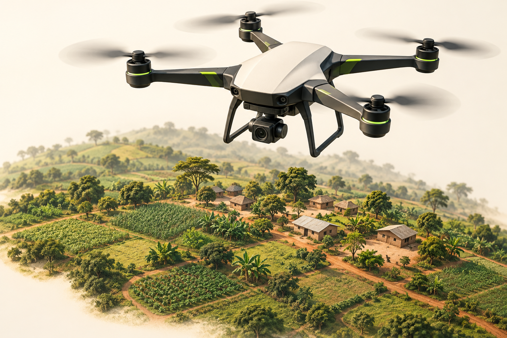
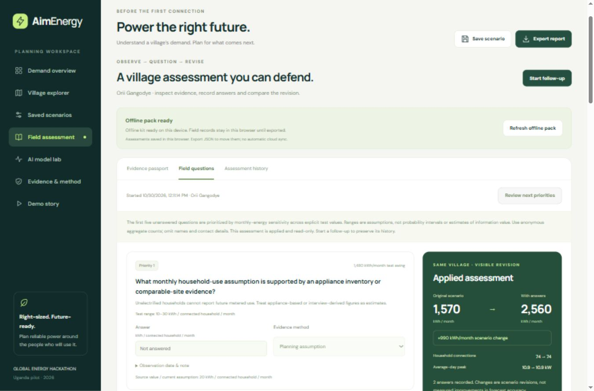

01
Start with a real place.
Explore population, buildings and mapped facilities. See the source of each input before deciding what it tells you about electricity use.
Explore the villages ↗Plan power around the people who will use it. Turn geographic evidence, AI-assisted estimates and local knowledge into a mini-grid demand scenario you can explain.
Editable planning scenario · not measured village demand
Real geographic context in Lamwo
Explore how a scenario could grow
From a first estimate to field evidence
A useful estimate gives you something to investigate. Connect the numbers to the place, the people and the next question.
Explore population, buildings and mapped facilities. See the source of each input before deciding what it tells you about electricity use.
Explore the villages ↗Inspect a trained household model. Add the mill, shop or clinic that could change the daily rhythm. Compare 24 months with explicit assumptions.
Meet the model ↗Find assumptions with the largest scenario impact. Record an answer, preserve the original evidence, and see exactly what changed.
Open the field workflow ↗
Inspect a real 2024 satellite mosaic for Orii Gangodye. Bring completed drone-survey features into the same evidence workflow, and compare dated building estimates when observations are available.
Explore satellite & drone evidenceImagery provides context, not electricity readings. Acquired imagery has explicit noncommercial-demo licensing; building history needs dated inputs.
Good planning keeps learning. An evidence passport shows what is observed, assumed or reported. Priority questions help a field team decide what to check next.
Offline preparation is device-specific. Responses stay in your browser until exported.
Try the USSD community preview ↗Browser simulation only. Live USSD would require mobile coverage and an online provider integration.

The prototype keeps model evaluation, measured current and planning scenarios separate. Open the results, including the limitations.
kWh / household / month · payment-derived target
About 10.1% lower error on this sample. Systematic underprediction remains; nominal 90% intervals covered 86.5% of test households.
Inspect the model evaluation ↗Four later-day timing comparisons, including a case where the reference loses on RMSE. Current readings are not measured kWh labels.
Open the complete result ledger ↗●Research prototype. Unseen-site kWh accuracy and village interval coverage are not yet established. Growth is scenario-based. The Tanzania exhibit is noncommercial research under CC BY-NC 3.0.
Start with a place. Shape a scenario. See what to verify next.